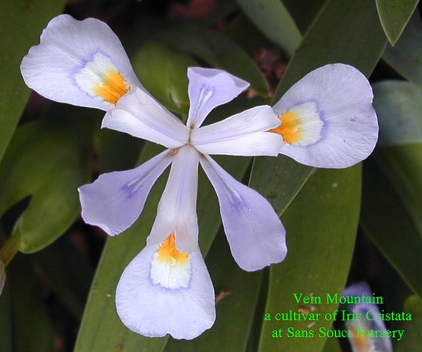

Vein Mountaina cultivar of Iris cristata - Crested Iris - a North American Species |
|  |
VEIN MOUNTAIN Hybridizer: R. Duval Registered: 1985 Type: I. cristata Height: 4-5 in. (10-12 cm) Bloom Season: Early, At Sans Souci we see these blooming among the earliest of our Irises. Description: The standards are pale blue with falls also pale blue with a prominent deep purple line outlining orange crests. The origin is unknown, it was received from T. Kusanagi of Japan as an I. gracilipes. |
|
Sans Souci Nursery, LLC
© 2005 Sans Souci Nursery . This image may only be used and/or reproduced by written permission of Sans Souci Nursery.
Specializing In Irises 3819 Beatty Road Monkton, Maryland 21111 Phone :(410) 557-0250 E-Mail:lbh0251@msn.com Webpage and catalogue production by BATW Web Services |
|